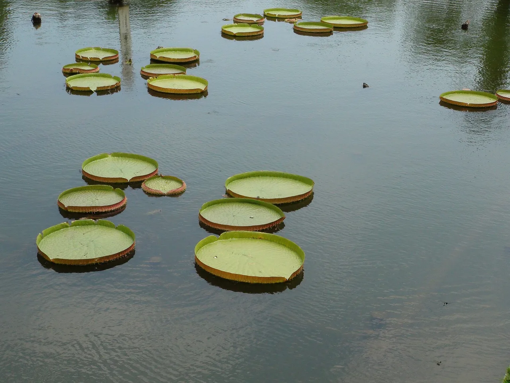

Oita Travel Guide for Japanese Learners
Japan's hot-spring capital — steaming Beppu and chic Yufuin.

Ōita produces more hot-spring water than anywhere in Japan. Beppu's 'hells' are vivid coloured springs, while Yufuin is a stylish onsen retreat below a twin-peaked mountain.
History & background
Ōita (大分) produces more hot-spring water than any prefecture in Japan. Beppu (別府) grew into a great onsen resort, while the Usuki (臼杵) stone Buddhas were carved into cliffs around the 12th century.
What to see
- Beppu's 'Hells' (jigoku) hot springs
- Yufuin onsen town
- Usuki stone Buddhas
- Mount Yufu
Hidden gems
- Takezaki Sake Brewery in Saiki offers tastings and tours of a 300-year-old producer still using traditional methods and local rice varieties.
- Himeshima Island ferry crossing rewards visitors with quiet beaches, fresh seafood restaurants, and views back toward the Kyushu mainland.
- Kunisaki Peninsula temple trail connects dozens of ancient Buddhist sites through forested mountains, far quieter than major onsen-town crowds.
Some links above are affiliate links. We may earn a commission at no extra cost to you. We only list services we'd use ourselves.
What to eat
Toriten (chicken tempura) and bungo beef.
Getting there & when to go
Getting there: Beppu/Ōita are ~2h from Fukuoka (Hakata) by limited express.
Best time: Any season — onsen are wonderful in cooler months.
When to go — season by season
Onsen are welcome year-round and especially soothing in cool months. Autumn colours Mount Yufu (由布岳) above stylish Yufuin.
Local culture
Ōita's onsen culture runs deeper than tourism—locals visit their neighborhood public bath (sento) daily, bathing before dinner with coworkers and neighbors. You'll notice the small ceramic soap dishes, the precise etiquette of rinsing before entering, and the quiet respect for shared water that shapes community life.
Bungo region crafts include intricate bamboo weaving and pottery using local clay. Artisans still work in family studios open to visitors, and you'll see these handmade baskets and vessels in ryokan rooms and local gift shops—each piece reflects techniques passed down across generations.
A suggested visit
Tour Beppu's vividly coloured 'hells' (for viewing), then soak in a real onsen. Spend a relaxed day in Yufuin (由布院) with its boutiques and mountain backdrop.
Seasonal tip: Visit November–February when onsen feel most restorative in cool weather, but book accommodations 2–3 weeks ahead as Japanese tourists prioritize this season.
Local etiquette: In public onsen and ryokan baths, never enter the communal water with soap on your body—always rinse thoroughly at your wash station first, as the pool is shared and kept clean for everyone.
The Beppu 'hells' are for viewing, not bathing — separate onsen are for soaking.
Some links above are affiliate links. We may earn a commission at no extra cost to you. We only list services we'd use ourselves.
Common questions
Q. How long does it take to reach Oita from Fukuoka?
A. About 2 hours by limited express train from Hakata Station. Book seats in advance during peak seasons, as Beppu and Yufuin attract visitors year-round.
Q. What's the difference between Beppu and Yufuin?
A. Beppu features the famous coloured 'Hells' (jigoku)—vivid geological hot springs. Yufuin is a quieter, upscale onsen town beneath Mount Yufu's twin peaks, better for relaxation.
Q. Is there a best time to visit Oita's hot springs?
A. Any season works, but cooler months—autumn and winter—make onsen most enjoyable. Spring offers fewer crowds if you visit outside Golden Week holidays.